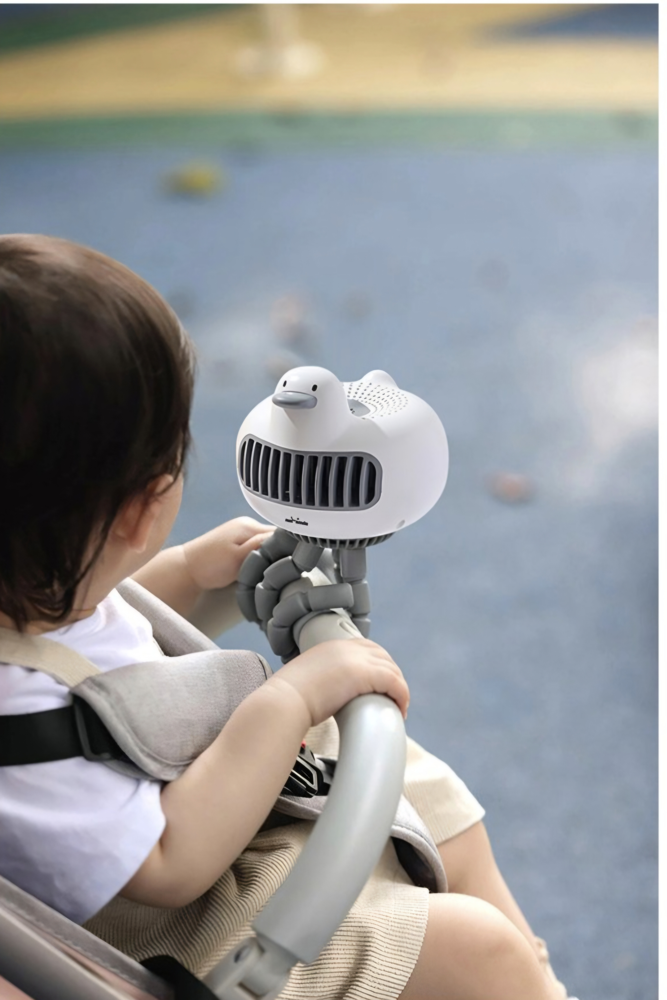
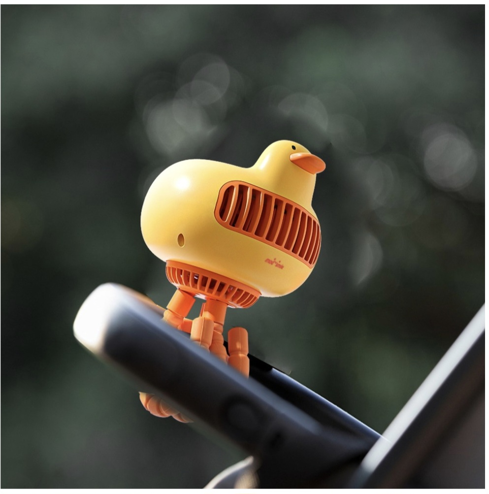
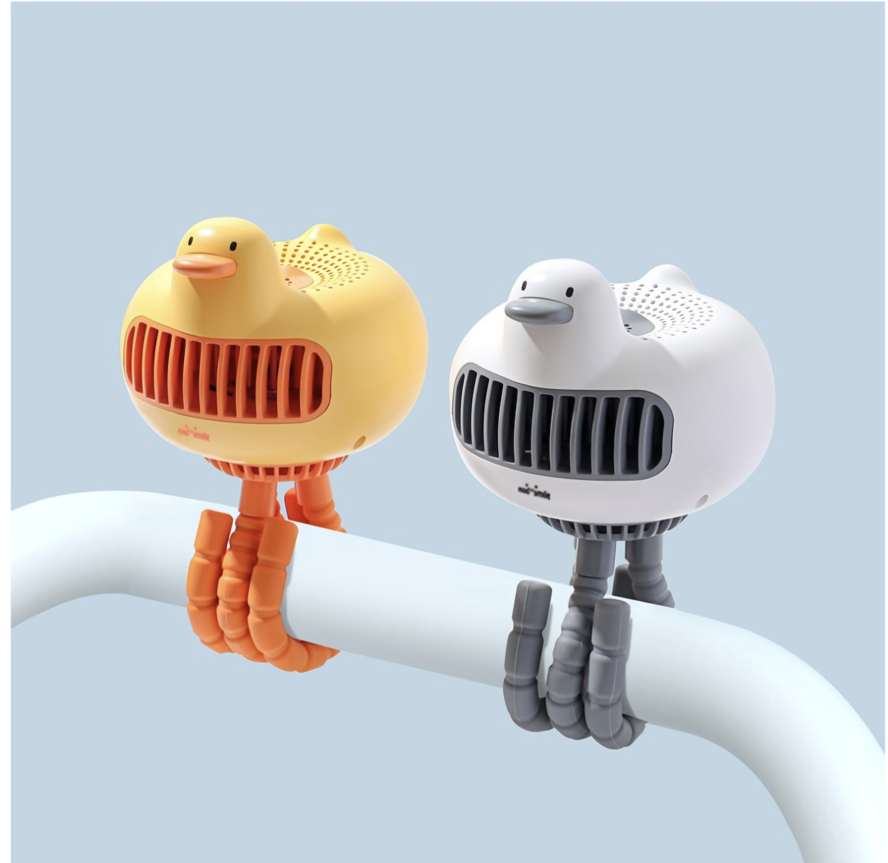
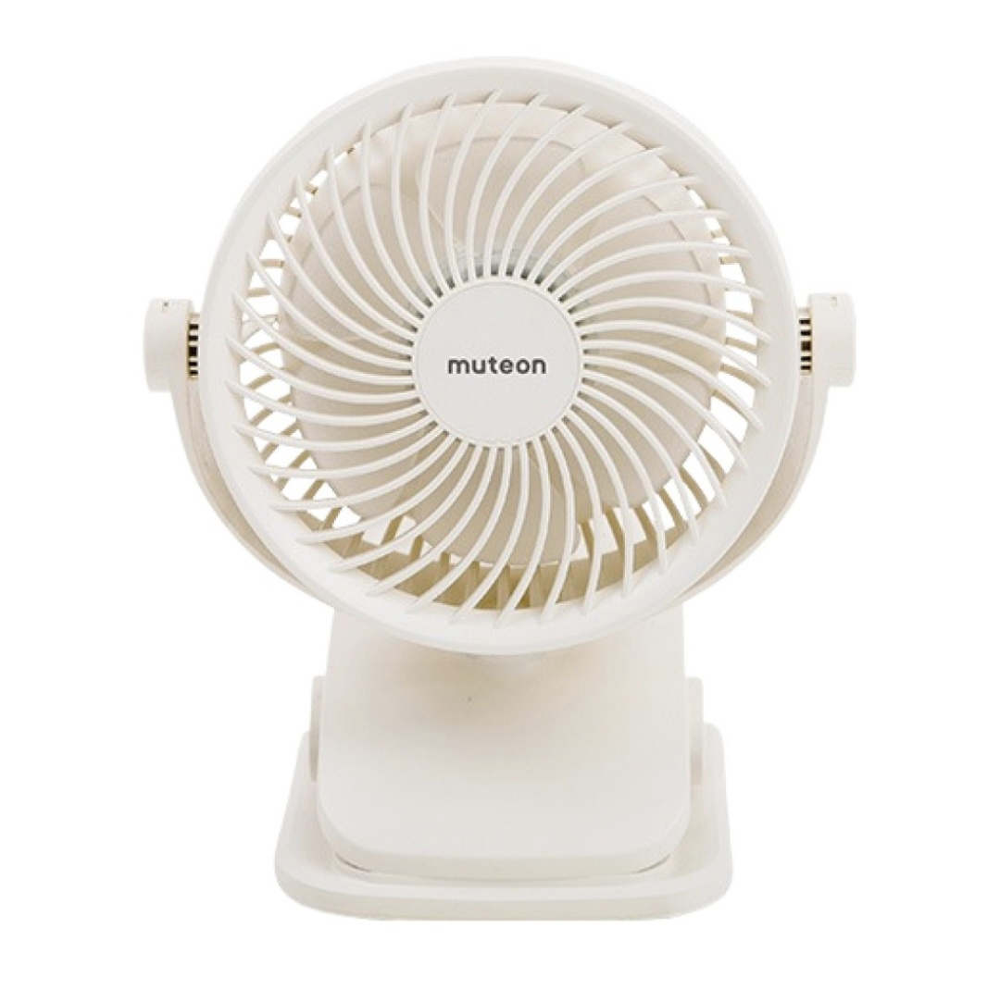
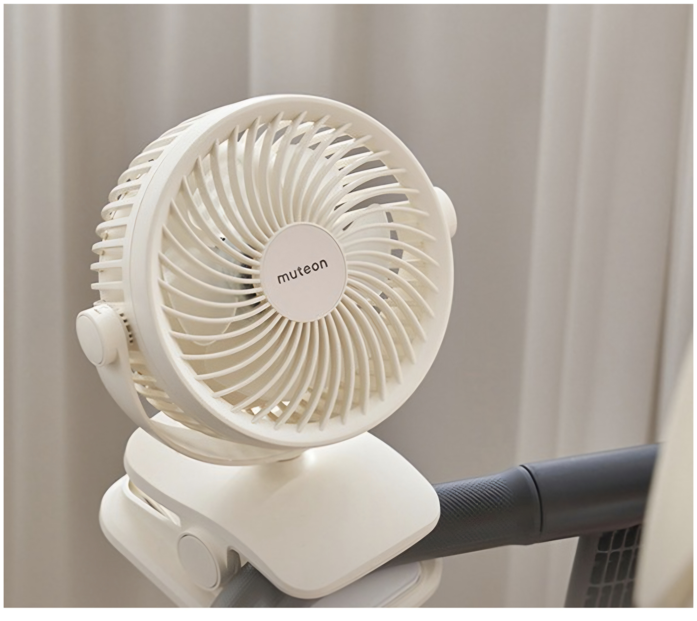
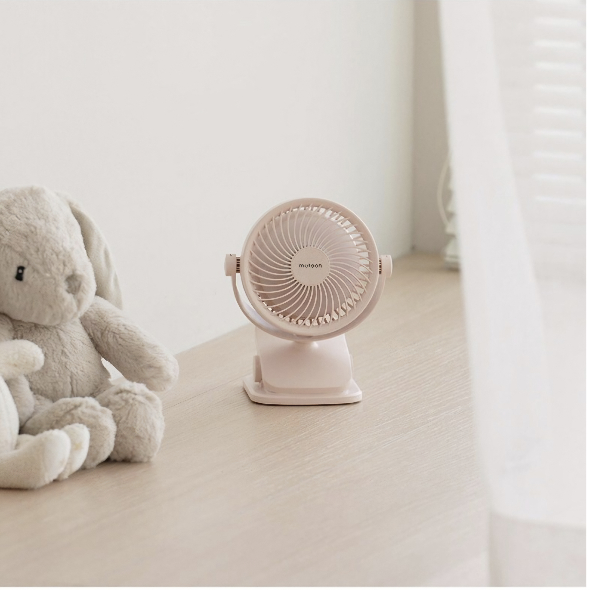

🌀 구매 가이드
아기 선풍기 추천·종류 비교 가이드 2026
— 유모차·목·탁상형 안전 선택법!
📅 2026년 7월 16일⏱ 읽는 시간 약 7분☀️ 여름 필수 육아템
여름철 아기를 키우는 부모님들의 공통 고민 — "선풍기 바람 쐬어도 되나요?" 아기는 체온 조절 능력이 어른보다 훨씬 미숙해서 일반 선풍기를 그대로 사용하면 저체온이나 탈수 위험이 생길 수 있어요. 아기 전용 선풍기는 풍량·안전망·소음 모두 아기에게 맞게 설계돼 있습니다. 어떤 걸 골라야 할지 2026년 기준으로 꼼꼼하게 정리했어요.
⚠️
신생아(0~3개월) 직접 바람은 금물!
신생아는 체온 조절 기능이 미숙해 선풍기 바람을 직접 쐬면 저체온·탈수 위험이 있습니다. 공기 순환 목적으로 간접 방향으로만 사용하세요.
아기 선풍기, 안전하게 쓰는 법
- 바람은 항상 간접 방향으로 — 아기 몸에 직접 닿지 않도록 벽이나 천장을 향하게
- 30분 켜고 30분 끄기 — 장시간 연속 사용보다 환기 형태로 활용
- 실내 온도 26~28도 유지 — 선풍기로 실내 온도를 낮추기보다 공기 순환 목적으로
- 아기 혼자 있을 때는 반드시 끄기 — 안전망이 있어도 보호자 없이 작동은 금지
- 취침 시 약풍 + 타이머 활용 — 수면 중 장시간 가동은 피부 건조 유발
종류별 비교 — 어떤 타입이 맞을까?
👑 외출 필수템
🌀
유모차·웨건 클립형
유모차나 웨건 프레임에 클립으로 고정. 외출 중 더위를 식혀주는 여름 나들이 필수템. 충전식 배터리 내장.
외출 사용 최적
USB 충전
회전 각도 조절
실내 단독 사용 불편
🏠
탁상·스탠드형
실내 침실·거실에 두고 사용. 바람 세기·각도·타이머 조절이 편리. 아기 방 쿨링에 가장 효과적인 타입.
강력한 풍량
타이머 기능
넓은 커버리지
외출 사용 불가
🪢
목 걸이형
아이 목에 걸어 이동 중에도 바람을 받는 구조. 날개가 없는 무날개 방식이 안전. 돌 이후 아이들에게 인기.
핸즈프리
무날개 안전
초경량
돌 이전 사용 위험
바람 약한 편
🤲
핸디·클러치형
부모가 손에 들거나 가방에 부착해 이동 중 아기에게 바람을 보내는 타입. 카페·식당 등 실내 외출에 유용.
초소형·경량
어디서나 사용
저렴
부모가 직접 들고 있어야 함
구매 전 체크포인트 6가지
01
안전망(핑거가드) 간격
날개 보호망 구멍이 5mm 이하여야 아기 손가락이 들어가지 않아요. 반드시 제품 스펙 확인.
02
소음(dB)
수면 중 사용한다면 40dB 이하 권장. 조용한 도서관이 약 40dB 기준. 소음이 클수록 아기 수면 방해.
03
풍량 단계 조절
최소 3단계 이상 조절 가능한 모델 선택. 신생아~6개월은 최약풍(1단계)만 사용.
04
배터리 용량·충전 방식
USB-C 충전 + 2,000mAh 이상 권장. 반나절 외출 기준 4시간 이상 사용 가능해야 합니다.
05
소재 안전성
BPA-Free, 무독성 ABS 플라스틱 여부 확인. 아기가 만지거나 입에 댈 수 있으므로 소재 안전이 중요.
06
클립·고정력
클립형은 유모차 프레임 굵기와 호환되는지 확인. 헐겁게 고정되면 주행 중 떨어질 위험이 있어요.
연령별 선택 가이드
| 월령 | 사용 가능 여부 | 추천 타입 | 주의사항 |
|---|
| 0~3개월 |
직접 사용 금지 |
간접 공기 순환 목적만 |
체온 조절 미숙 — 직접 바람 금물 |
| 4~6개월 |
간접 사용 가능 |
탁상형 (벽 방향 간접) |
1단계 약풍, 30분 이상 연속 금지 |
| 7~12개월 |
사용 가능 |
클립형 + 탁상형 |
직접 바람은 약풍으로, 간접 방향 권장 |
| 12~24개월 |
적극 활용 |
클립형 + 목걸이형 |
목걸이형은 혼자 두지 않기 (끈 위험) |
| 24개월 이상 |
자유롭게 |
목걸이형·핸디형 |
배터리 삼킴 주의, 보호자 동반 사용 |
용도별 추천 상품
🌀 유모차·웨건 외출용 — 클립형 선풍기
나들이·공원·베이비페어 현장에서 유모차나 웨건에 장착해 사용하는 여름 필수템. 360도 회전 가능한 목 부분과 강력한 클립 고정력이 핵심입니다.



모두스마일 유모차 선풍기 — 24시간 작동·국내 최대 용량·KC인증
귀여운 병아리·오리 캐릭터 디자인. 국내 최대 배터리 용량으로 24시간 연속 작동. 어린이 KC 안전 인증. 유연한 클립 다리로 유모차·웨건 어디든 장착 가능. 옐로우·화이트 2색 선택.
⏱️ 24시간 작동
✅ KC 안전 인증
🐥 캐릭터 디자인
🎨 2가지 색상
쿠팡에서 상품 보러가기 →
이 포스팅은 쿠팡 파트너스 활동의 일환으로, 이에 따른 일정액의 수수료를 제공받습니다. 이미지 출처: 쿠팡(coupang.com)
🏠 실내 아기 방용 — 탁상·클립 겸용형
탁상 스탠드와 유모차 클립 두 가지로 활용 가능한 겸용 타입. 저소음 모델에 타이머·자동 꺼짐 기능이 있으면 수면 중 사용도 안심입니다.



뮤트온 유아용 휴대용 선풍기 — 탁상+유모차 클립 겸용
탁상 스탠드와 유모차 클립, 두 가지로 모두 사용 가능한 겸용 모델. 화이트·핑크 색상 선택. 풍량 3단계 조절, 360° 각도 조절로 바람 방향 자유롭게 설정 가능. 심플하고 미니멀한 디자인으로 아기방 인테리어에 잘 어울려요.
🏠 탁상+클립 겸용
🔄 360° 각도 조절
🎨 2가지 색상
💨 3단계 풍량
쿠팡에서 상품 보러가기 →
이 포스팅은 쿠팡 파트너스 활동의 일환으로, 이에 따른 일정액의 수수료를 제공받습니다. 이미지 출처: 쿠팡(coupang.com)
🪢 돌 이후 나들이용 — 목걸이형 선풍기
아이가 직접 목에 걸고 다닐 수 있어 부모 손이 자유로워지는 타입. 무날개(블레이드리스) 방식이라 안전하고, 초경량이라 오래 걸어도 부담 없어요.
🪢
무날개 아기 목걸이형 선풍기
블레이드리스 안전 설계·USB-C 충전·초경량. 돌 이후 아이 목에 걸면 나들이 내내 시원하게.
쿠팡에서 상품 보러가기 →
이 포스팅은 쿠팡 파트너스 활동의 일환으로, 이에 따른 일정액의 수수료를 제공받습니다.
여름 쿨링 꿀팁
💡
선풍기 + 젖은 수건 조합이 에어컨보다 효과적일 때
아기 방 온도가 이미 낮다면 에어컨보다 선풍기 앞에 젖은 수건을 놓는 방식이 가습과 냉각을 동시에 해결합니다. 단, 수건이 오염되지 않도록 자주 교체하세요.
- 외출 전 유모차 내부 온도 체크 — 직사광선에 주차된 유모차 내부는 60도 이상이 될 수 있어요. 출발 전 선풍기로 먼저 식혀주세요
- 클립형 선풍기는 출발 10분 전부터 가동 — 유모차 시트 온도를 미리 낮춰두면 아기가 탔을 때 훨씬 쾌적합니다
- 쿨링 타월 + 선풍기 조합 — 젖은 쿨링 타월을 목이나 손목에 감아주고 선풍기 바람을 쐬면 체감 온도가 훨씬 내려가요
- 목걸이형은 목 주변 피부 발적 주의 — 장시간 사용 시 목 피부에 자국이 생길 수 있어 30~40분마다 빼주세요
- 충전은 외출 전날 밤에 — 나들이 당일 배터리 부족으로 당황하지 않으려면 전날 밤 완충이 습관
🌡️
열사병 증상이 보이면 즉시 응급 대응!
아기가 고열·무기력·피부 발적·땀이 나지 않는 증상을 보이면 선풍기 냉각보다 즉시 시원한 곳으로 이동 후 119에 연락하세요.
🔗 함께 보면 좋은 글